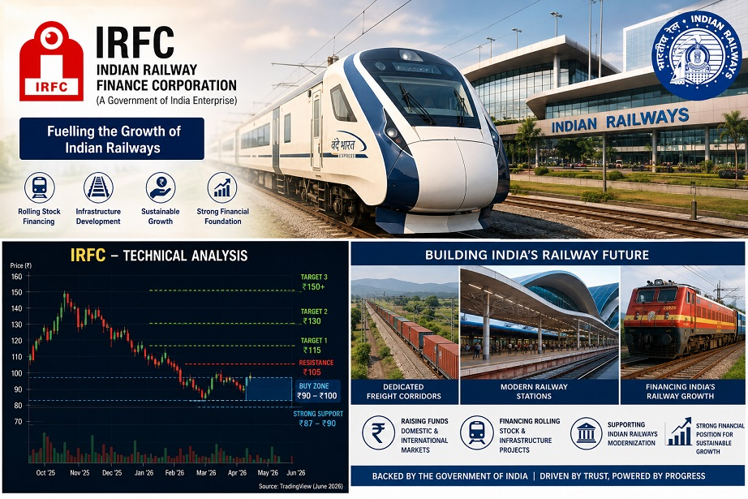

Indian Railway Finance Corporation (IRFC) is the dedicated financing arm of Indian Railways and a key beneficiary of India's massive railway infrastructure expansion. With strong government backing, stable cash flows, and attractive dividend payouts, IRFC remains one of the most important infrastructure stocks in India.
₹96–97
₹1.26 Lakh Cr
₹149
₹87
18x
2.1%
IRFC remains one of the strongest railway infrastructure plays in India. The stock offers a unique combination of government backing, stable earnings, attractive dividends, and direct participation in India's railway modernization journey.
Following the correction from its 52-week highs, valuations have become more reasonable, making the stock attractive for long-term investors seeking infrastructure exposure.
₹90–100
₹115
₹130
₹150+
Long-Term View: Bullish 📈
Investment Horizon: 3–5 Years
Risk Level: Moderate